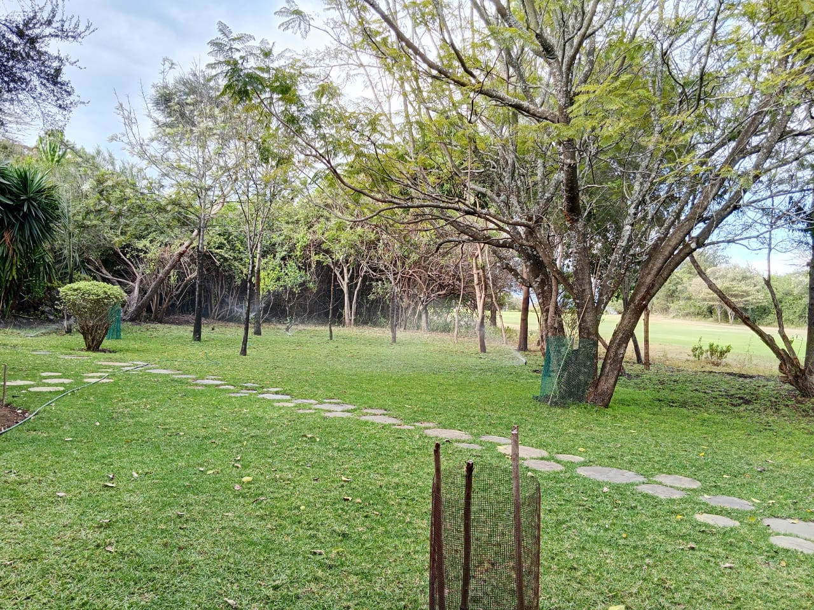
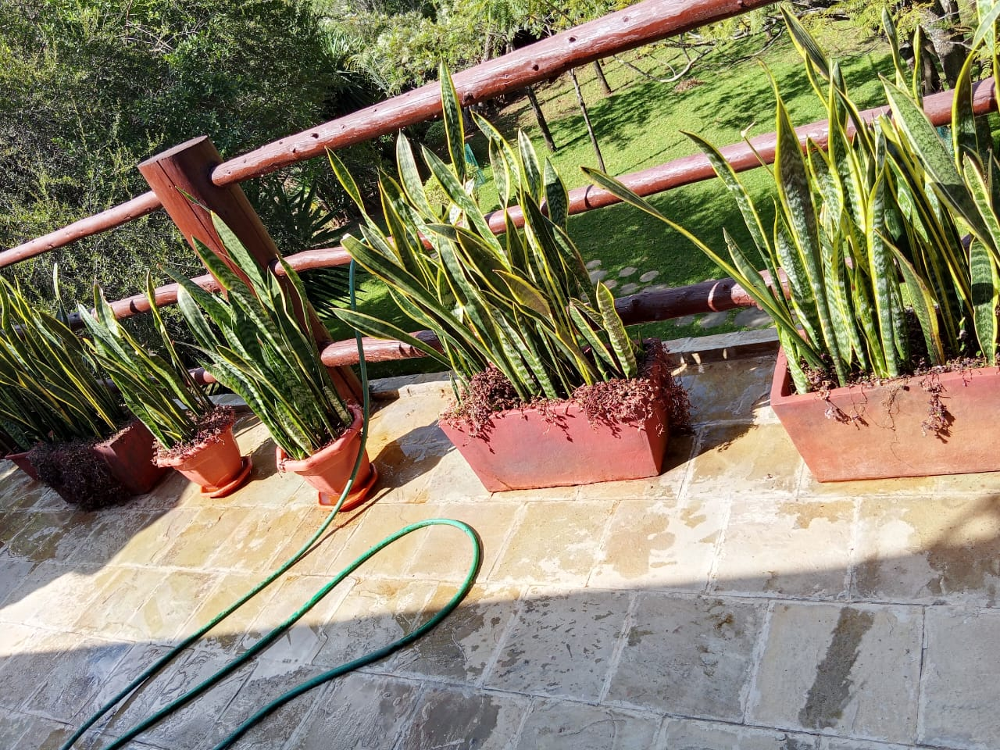

Mucheru World of Golf
Field operations focused on two primary tasks: applying pumice dressing to several greens and digging trench lines for the course irrigation system.
- Pumice Application & Levelling: Pumice material was brought in, spread, and carefully levelled across five golf greens: Green 2, Green 18, Green 11, Green 12, and Green 13. This ensures proper surface layer formation, rootzone aeration, and drainage.
- Irrigation Pipe Trenching: Trench digging for the underground irrigation network continued across designated course sections, preparing clear trenches for pipeline installation and sprinkler line connections.
- Field Transfer: Surplus fencing poles were loaded and transferred over to Chaka Farms Gate A to support farm perimeter fencing.
Milestone Accomplished
Pumice application and levelling completed across Greens 2, 18, 11, 12, and 13, establishing consistent surface preparation across all five greens.
Field Progress Recording
On-site video documenting the pumice application and levelling across greens, alongside irrigation trench excavation work.
Photographic documentation showing pumice spreading across greens and excavation of piping trenches for the irrigation system.

Pumice Dressing Applied
Fresh pumice layer spread evenly over the green surface to improve drainage and rootzone conditioning.

Green Surface Levelling
Field team working the pumice layer across the green to establish an even playing surface.

Pumice Distribution Progress
Even coverage of pumice material distributed across the contoured green profile.

Completed Pumice Layer
Finished view of levelled pumice dressing across the green foundation.

Irrigation Trench Digging
Manual excavation underway to dig deep trenches for main and lateral irrigation lines.

Piping Trench Profile
Straight trench line cleared to the required depth to receive irrigation pipes and fittings.

Extended Piping Trench Route
Continuous trench route cut along the playing area edge for irrigation pipe routing.
Chaka Farms
Operations at Chaka Farms included daily dairy milking, facility cleaning, vegetation management, pathway clearing with the rotavator, and afternoon canine care.
- Dairy Milking & Ration Disbursements: Morning milk yield came in at 2.5 Litres and evening milking yielded 2.0 Litres, bringing gross dairy production to 4.5 Litres. Rations drawn from this production included 1.0 Litre for goat kids (0.5L morning and 0.5L evening), 0.5 Litre for Gladys, and 0.5 Litre for Maasai, leaving a net farm balance of 2.5 Litres.
- Shed & Hay Area Sanitation: Kamandau thoroughly cleaned and washed down the cow shed and swept out the hay storage area, keeping animal feed and housing clean.
- Grass Cutting & Fencing Poles: Kinoti supervised cutting down tall dry grass across the farm. Fencing poles moved from the golf site were stacked at Gate A ready for installation.
- Pathway Clearing via Rotavator: The tractor rotavator was used to cultivate and clear out grass and weeds from farm pathways, opening up smooth, accessible routes between paddocks.
- General Compound Care: Margaret and Monica maintained overall compound cleanliness, keeping pathways and open grounds tidy.
Daily milk yield ledger recorded strictly in Litres (L). Rations and allocations are deducted directly from total gross production.
| Category / Recipient | Morning (L) | Evening (L) | Total Volume (L) | Allocation Details |
|---|---|---|---|---|
| Gross Cow Milk Yield | 2.5 L | 2.0 L | 4.5 L | Total Daily Farm Production |
| Goat Kids Ration | 0.5 L | 0.5 L | - 1.0 L | Kid rearing allocation (morning & evening) |
| Gladys Allocation | 0.5 L | — | - 0.5 L | Disbursed ration |
| Maasai Allocation | 0.5 L | — | - 0.5 L | Disbursed ration |
| Total Allocations Deducted | 1.5 L | 0.5 L | - 2.0 L | Total deductions drawn from yield |
| Net Remaining Farm Balance | 1.0 L | 1.5 L | 2.5 L | Stored farm balance |
Milk Production Note
Gross milk yield stood at 4.5 Litres. Deductions of 2.0 Litres were made for goat kids, Gladys, and Maasai, leaving a clean net farm balance of 2.5 Litres.
Canine handling and compound cleaning logs for September 12th:
- Afternoon Off-Leash Exercise: Dogs were taken out for farm walking and off-leash exercise across open farm fields during the afternoon.
- Kennel Manners & Commands: Kennel manners and paw command routines were practiced and successfully observed.
- Weather Advisory: Due to bad weather conditions (rain and wet ground), other routine outdoor activities and bathing were postponed.
- Compound Cleaning: Margaret and Monica carried out sweeping and general compound maintenance across the residential and farm yards.
Weather Advisory Note
Heavy weather limited outdoor training to afternoon farm walking and kennel obedience routines. Grooming and extended field drills will resume once ground conditions dry up.
Visual field records covering dairy shed cleaning, grass cutting, rotavating pathways, fence pole storage, and aerial path views.

Cow Shed Cleaned
Cow stalls and concrete gutters washed and cleared during daily morning sanitation.

Hay Storage Area Sweeping
Kamandau cleaning up and organizing loose hay within the feed storage area.

Hay Shed Cleaned
Cleaned feed storage shed floor with hay bales neatly stacked and dry.
.jpeg)
Field Vegetation (Before)
Overgrown dry grass in the paddock area before clearance work began.
.jpeg)
Field Vegetation (After)
Paddock area cleared of tall dry grass, reducing brush and improving field access.

Rotavator Pathway Clearing
Farm pathway cultivated and cleared of grass using the tractor rotavator.

Rotavated Access Route
Even, well-tilled soil bed opened up along the paddock access corridor.

Paddock Boundary Path
Clear line opened between paddock fences for smooth vehicle and foot passage.

Farm Passage Rotavation
Rotavator breaking through stubborn weed cover to level out the roadway.

Rotavated Soil Bed
Close-up of the finely tilled and loosened soil path following the rotavator pass.

Aerial View — Cleared Pathways
Elevated perspective showing the network of cleanly rotavated paths running between paddocks.

Aerial View — Internal Access
High-angle shot illustrating clean separation of farm boundaries and road corridors.

Aerial View — Farm Grounds
Wide view displaying the open paths and cleared grassy fields across the farm.

Fencing Poles at Gate A
Treated fencing poles moved from the golf site and neatly stacked at Gate A.
Kabete Residence
Site activities at Kabete Residence centered on ground excavation, exposing power infrastructure, and reinforcing edge safety.
- Ground-Level Demolition & Clearance: Manual demolition and clearance continued at the ground level, breaking away stubborn soil and rocky debris from the excavation front.
- Three-Phase Cable Access Expansion: Excavation was extended further into the ground level to safely expose and access the three-phase electrical cables for scheduled utility connections.
- Tree Root Removal: A large underground tree root embedded in the earth bank was dug out and removed to allow clean excavation.
- Safety Boundaries Raised: Protective wooden safety boards and barriers were installed along the top edge of the excavation drop to secure the boundary.
- Domestic Pet Care: Ajabu the Golden Retriever rested comfortably, and resident cats Reo, Mocha, and Aiko were fed and attended to.
Site Safety & Access Milestone
Ground-level excavation successfully exposed the three-phase power line route, while safety barriers were raised to secure the upper bank.
Photographic records showing site demolition, three-phase cable excavation, tree root extraction, safety barriers, and resident pets.

Ground-Level Demolition
Workers clearing earth and broken material at the base of the excavation area.

Excavation Clearance Progress
Progressive clearing of soil and debris along the lower working level.

Three-Phase Cable Trenching
Ground cut deeper to provide clear access to underground three-phase electrical lines.

Tree Root Removed
Extracted tree root pulled from the red soil bank during ground clearance.

Safety Boundaries Raised
Wooden safety panels erected along the top edge of the excavation to guard the drop.

Ajabu at Rest
Ajabu the Golden Retriever resting comfortably at Kabete Residence.

Resident Cats: Reo, Mocha & Aiko
Resident cats Reo, Mocha, and Aiko feeding together at their meal station.
Amani Cottage
Grounds and housekeeping routines at Amani Cottage focused on lawn watering, compound tidiness, and balcony plant care.
- Lawn Sprinkler Irrigation: Sprinklers were run across the front lawn, ensuring thorough moisture coverage for the turf and surrounding trees.
- Grounds Sweeping: Outdoor paths and lawn areas were swept clean of fallen dry leaves and debris.
- Upstairs Snake Tree Watering: Potted snake plants (Sansevieria) arranged along the upstairs wooden balcony railing were watered and inspected.
Grounds & Cottage Condition
Front lawn well-irrigated and cleared, with upstairs balcony snake trees watered and thriving.
Photographic records of front lawn irrigation, general cottage exterior, and watered balcony snake plants.

Cottage Grounds & Lawn
Exterior view of Amani Cottage showing clean, swept front lawn and lush surroundings.

Front Lawn Sprinkler Irrigation
Sprinklers operating across the front lawn providing even water coverage to grass and trees.

Watering Balcony Snake Trees
Upstairs balcony planters with snake plants thoroughly watered and cleaned.